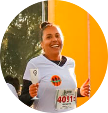

- Corrida
- Bicicleta
- Funcional
- Musculação
/favicon-16x16.png) Família
Família
Meu nome é Rosimar Soares Coimbra, sou formada em Análise e Desenvolvimento de sistemas em 2013, porém não atuando na área, estou recomeçando quase que do zero, com essa grande oportunidade Bradesco, Vissionare e PUC. Bora lá aprender e colocar em prática!
Aqui em Curitiba com esposo e sem ninguém mais da família. Gosto muito de morar aqui, Curitiba é muito linda e tem muitas oportunidades e eu espero aproveitá-las muito bem, inclusive curtindo muito o aprendizado aqui no curso.
Gosto muito de praticar atividades físicas, principalmente a corrida, é um esporte que se torna em lazer, é muito gratificante.
Família